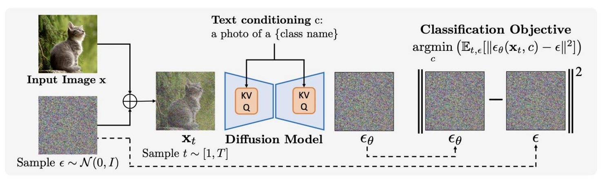
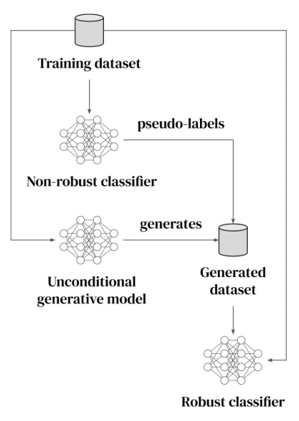

<!DOCTYPE HTML>
<html lang="en" class="sidebar-visible no-js light">
    <head>
        <!-- Book generated using mdBook -->
        <meta charset="UTF-8">
        <title>图像编辑 - ImportantArticles</title>
        <!-- Custom HTML head -->
        <meta content="text/html; charset=utf-8" http-equiv="Content-Type">
        <meta name="description" content="The note of Important Articles">
        <meta name="viewport" content="width=device-width, initial-scale=1">
        <meta name="theme-color" content="#ffffff" />

        <link rel="icon" href="../../favicon.svg">
        <link rel="shortcut icon" href="../../favicon.png">
        <link rel="stylesheet" href="../../css/variables.css">
        <link rel="stylesheet" href="../../css/general.css">
        <link rel="stylesheet" href="../../css/chrome.css">
        <link rel="stylesheet" href="../../css/print.css" media="print">
        <!-- Fonts -->
        <link rel="stylesheet" href="../../FontAwesome/css/font-awesome.css">
        <link rel="stylesheet" href="../../fonts/fonts.css">
        <!-- Highlight.js Stylesheets -->
        <link rel="stylesheet" href="../../highlight.css">
        <link rel="stylesheet" href="../../tomorrow-night.css">
        <link rel="stylesheet" href="../../ayu-highlight.css">

        <!-- Custom theme stylesheets -->
        <link rel="stylesheet" href="../../theme/pagetoc.css">
        <!-- MathJax -->
        <script async type="text/javascript" src="https://cdnjs.cloudflare.com/ajax/libs/mathjax/2.7.1/MathJax.js?config=TeX-AMS-MML_HTMLorMML"></script>
    </head>
    <body>
        <!-- Provide site root to javascript -->
        <script type="text/javascript">
            var path_to_root = "../../";
            var default_theme = window.matchMedia("(prefers-color-scheme: dark)").matches ? "navy" : "light";
        </script>

        <!-- Work around some values being stored in localStorage wrapped in quotes -->
        <script type="text/javascript">
            try {
                var theme = localStorage.getItem('mdbook-theme');
                var sidebar = localStorage.getItem('mdbook-sidebar');

                if (theme.startsWith('"') && theme.endsWith('"')) {
                    localStorage.setItem('mdbook-theme', theme.slice(1, theme.length - 1));
                }

                if (sidebar.startsWith('"') && sidebar.endsWith('"')) {
                    localStorage.setItem('mdbook-sidebar', sidebar.slice(1, sidebar.length - 1));
                }
            } catch (e) { }
        </script>

        <!-- Set the theme before any content is loaded, prevents flash -->
        <script type="text/javascript">
            var theme;
            try { theme = localStorage.getItem('mdbook-theme'); } catch(e) { }
            if (theme === null || theme === undefined) { theme = default_theme; }
            var html = document.querySelector('html');
            html.classList.remove('no-js')
            html.classList.remove('light')
            html.classList.add(theme);
            html.classList.add('js');
        </script>

        <!-- Hide / unhide sidebar before it is displayed -->
        <script type="text/javascript">
            var html = document.querySelector('html');
            var sidebar = 'hidden';
            if (document.body.clientWidth >= 1080) {
                try { sidebar = localStorage.getItem('mdbook-sidebar'); } catch(e) { }
                sidebar = sidebar || 'visible';
            }
            html.classList.remove('sidebar-visible');
            html.classList.add("sidebar-" + sidebar);
        </script>

        <nav id="sidebar" class="sidebar" aria-label="Table of contents">
            <div class="sidebar-scrollbox">
                <ol class="chapter"><li class="chapter-item expanded "><a href="../../index.html"><strong aria-hidden="true">1.</strong> Introduction</a></li><li class="chapter-item expanded "><a href="../../ReadPapers.html"><strong aria-hidden="true">2.</strong> 如何高效读论文</a></li><li class="chapter-item expanded affix "><li class="part-title">CVPR Tutorial - Denoising Diffusion Models: A Generative Learning Big Bang</li><li class="chapter-item expanded "><a href="../../diffusion-tutorial-part/Introduction.html"><strong aria-hidden="true">3.</strong> Introduction</a></li><li class="chapter-item expanded "><div><strong aria-hidden="true">4.</strong> Fundamentals</div></li><li><ol class="section"><li class="chapter-item expanded "><a href="../../diffusion-tutorial-part/Fundamentals/DenoisingDiffusionProbabilisticModels.html"><strong aria-hidden="true">4.1.</strong> Denoising Diffusion Probabilistic Models</a></li><li class="chapter-item expanded "><a href="../../diffusion-tutorial-part/Fundamentals/Score-basedGenerativeModelingwithDifferentialEquations.html"><strong aria-hidden="true">4.2.</strong> Score-based Generative Modeling with Differential Equations</a></li><li class="chapter-item expanded "><a href="../../diffusion-tutorial-part/Fundamentals/AcceleratedSampling.html"><strong aria-hidden="true">4.3.</strong> Accelerated Sampling</a></li><li class="chapter-item expanded "><a href="../../diffusion-tutorial-part/Fundamentals/ConditionalGenerationandGuidance.html"><strong aria-hidden="true">4.4.</strong> Conditional Generation and Guidance</a></li><li class="chapter-item expanded "><a href="../../diffusion-tutorial-part/Fundamentals/Summary.html"><strong aria-hidden="true">4.5.</strong> Summary</a></li></ol></li><li class="chapter-item expanded "><a href="../../diffusion-tutorial-part/Architecture.html"><strong aria-hidden="true">5.</strong> T2I 基模型</a></li><li class="chapter-item expanded "><div><strong aria-hidden="true">6.</strong> Image Applications Based on 基模型</div></li><li><ol class="section"><li class="chapter-item expanded "><a href="../../diffusion-tutorial-part/ApplicationOnImage/ImageEditing.html" class="active"><strong aria-hidden="true">6.1.</strong> 图像编辑</a></li><li class="chapter-item expanded "><a href="../../diffusion-tutorial-part/Applicationsonotherdomains/InverseProblems.html"><strong aria-hidden="true">6.2.</strong> 图像去噪/图像超分/图像补全</a></li><li class="chapter-item expanded "><a href="../../diffusion-tutorial-part/ApplicationOnImage/LargeContents.html"><strong aria-hidden="true">6.3.</strong> 大图生成</a></li></ol></li><li class="chapter-item expanded "><div><strong aria-hidden="true">7.</strong> 3D Applications Based on Diffusion</div></li><li><ol class="section"><li class="chapter-item expanded "><a href="../../diffusion-tutorial-part/ApplicationsOn3D/3D.html"><strong aria-hidden="true">7.1.</strong> 3D表示</a></li><li class="chapter-item expanded "><a href="../../diffusion-tutorial-part/ApplicationsOn3D/2Ddiffusionmodelsfor3Dgeneration.html"><strong aria-hidden="true">7.2.</strong> 3D生成</a></li><li class="chapter-item expanded "><a href="../../diffusion-tutorial-part/ApplicationsOn3D/Diffusionmodelsforviewsynthesis.html"><strong aria-hidden="true">7.3.</strong> 新视角合成</a></li><li class="chapter-item expanded "><a href="../../diffusion-tutorial-part/ApplicationsOn3D/3Dreconstruction.html"><strong aria-hidden="true">7.4.</strong> 3D重建</a></li><li class="chapter-item expanded "><a href="../../diffusion-tutorial-part/ApplicationsOn3D/Inverseproblems.html"><strong aria-hidden="true">7.5.</strong> 3D编辑</a></li></ol></li><li class="chapter-item expanded "><a href="../../diffusion-tutorial-part/ApplicationsOn3D/Safetyandlimitationsofdiffusionmodels.html"><strong aria-hidden="true">8.</strong> Safety and limitations of diffusion models</a></li><li class="chapter-item expanded affix "><li class="part-title">Video Diffusion Models</li><li class="chapter-item expanded "><a href="../../VideoDiffusionModels/Introduction.html"><strong aria-hidden="true">9.</strong> Introduction</a></li><li class="chapter-item expanded "><a href="../../VideoDiffusionModels/VideoGeneration/VideoGeneration.html"><strong aria-hidden="true">10.</strong> Video Generation</a></li><li><ol class="section"><li class="chapter-item expanded "><a href="../../VideoDiffusionModels/VideoGeneration/Pioneeringearlyworks.html"><strong aria-hidden="true">10.1.</strong> 闭源T2V大模型</a></li><li class="chapter-item expanded "><a href="../../VideoDiffusionModels/VideoGeneration/Open-sourcebasemodels.html"><strong aria-hidden="true">10.2.</strong> 开源T2V基模型</a></li><li class="chapter-item expanded "><a href="../../VideoDiffusionModels/VideoGeneration/WorksBasedOnT2I.html"><strong aria-hidden="true">10.3.</strong> Works Based on T2I 基模型</a></li><li class="chapter-item expanded "><a href="../../VideoDiffusionModels/VideoGeneration/WorksBasedOnT2V.html"><strong aria-hidden="true">10.4.</strong> Works Based on T2V 基模型</a></li><li class="chapter-item expanded "><a href="../../VideoDiffusionModels/VideoGeneration/Storyboard.html"><strong aria-hidden="true">10.5.</strong> Storyboard</a></li><li class="chapter-item expanded "><a href="../../VideoDiffusionModels/VideoGeneration/Longvideogeneration.html"><strong aria-hidden="true">10.6.</strong> Long video generation</a></li><li class="chapter-item expanded "><a href="../../VideoDiffusionModels/VideoGeneration/Multimodal-guidedgeneration.html"><strong aria-hidden="true">10.7.</strong> Multimodal-guided generation</a></li></ol></li><li class="chapter-item expanded "><a href="../../VideoDiffusionModels/VideoEditing.html"><strong aria-hidden="true">11.</strong> Video Editing</a></li><li><ol class="section"><li class="chapter-item expanded "><a href="../../VideoDiffusionModels/VideoEditing/Tuning-based.html"><strong aria-hidden="true">11.1.</strong> Tuning-based</a></li><li class="chapter-item expanded "><a href="../../VideoDiffusionModels/VideoEditing/Training-free.html"><strong aria-hidden="true">11.2.</strong> Training-free</a></li><li class="chapter-item expanded "><a href="../../VideoDiffusionModels/VideoEditing/ControlledEdifng.html"><strong aria-hidden="true">11.3.</strong> Controlled Edifng</a></li><li class="chapter-item expanded "><a href="../../VideoDiffusionModels/VideoEditing/3D-Aware.html"><strong aria-hidden="true">11.4.</strong> 3D-Aware</a></li><li class="chapter-item expanded "><a href="../../VideoDiffusionModels/VideoEditing/OtherGuidance.html"><strong aria-hidden="true">11.5.</strong> Other Guidance</a></li></ol></li><li class="chapter-item expanded "><a href="../../VideoDiffusionModels/EvaluationMetrics.html"><strong aria-hidden="true">12.</strong> 评价指标</a></li><li class="chapter-item expanded affix "><li class="part-title">Others</li><li class="chapter-item expanded "><a href="../../LargeMultimodalModelsNotesonCVPR2023Tutorial.html"><strong aria-hidden="true">13.</strong> Large Multimodal Models Notes on CVPR 2023 Tutorial</a></li><li class="chapter-item expanded "><a href="../../HPE_HMR_Summary.html"><strong aria-hidden="true">14.</strong> Deep Learning for 3D Human Pose Estimation and Mesh Recovery: A Survey</a></li><li class="chapter-item expanded "><a href="../../3D_Gaussian_Splatting.html"><strong aria-hidden="true">15.</strong> A Survey on 3D Gaussian Splatting</a></li><li class="chapter-item expanded "><a href="../../HumanMotionGenerationSummary.html"><strong aria-hidden="true">16.</strong> Human Motion Generation: A Survey</a></li><li class="chapter-item expanded "><a href="../../HumanVideoGeneration.html"><strong aria-hidden="true">17.</strong> Human Video Generation</a></li><li class="chapter-item expanded "><a href="../../数据集.html"><strong aria-hidden="true">18.</strong> 数据集</a></li></ol>
            </div>
            <div id="sidebar-resize-handle" class="sidebar-resize-handle"></div>
        </nav>

        <div id="page-wrapper" class="page-wrapper">

            <div class="page">
                <div id="menu-bar-hover-placeholder"></div>
                <div id="menu-bar" class="menu-bar sticky bordered">
                    <div class="left-buttons">
                        <button id="sidebar-toggle" class="icon-button" type="button" title="Toggle Table of Contents" aria-label="Toggle Table of Contents" aria-controls="sidebar">
                            <i class="fa fa-bars"></i>
                        </button>
                        <button id="theme-toggle" class="icon-button" type="button" title="Change theme" aria-label="Change theme" aria-haspopup="true" aria-expanded="false" aria-controls="theme-list">
                            <i class="fa fa-paint-brush"></i>
                        </button>
                        <ul id="theme-list" class="theme-popup" aria-label="Themes" role="menu">
                            <li role="none"><button role="menuitem" class="theme" id="light">Light (default)</button></li>
                            <li role="none"><button role="menuitem" class="theme" id="rust">Rust</button></li>
                            <li role="none"><button role="menuitem" class="theme" id="coal">Coal</button></li>
                            <li role="none"><button role="menuitem" class="theme" id="navy">Navy</button></li>
                            <li role="none"><button role="menuitem" class="theme" id="ayu">Ayu</button></li>
                        </ul>
                        <button id="search-toggle" class="icon-button" type="button" title="Search. (Shortkey: s)" aria-label="Toggle Searchbar" aria-expanded="false" aria-keyshortcuts="S" aria-controls="searchbar">
                            <i class="fa fa-search"></i>
                        </button>
                    </div>

                    <h1 class="menu-title">ImportantArticles</h1>

                    <div class="right-buttons">
                        <a href="../../print.html" title="Print this book" aria-label="Print this book">
                            <i id="print-button" class="fa fa-print"></i>
                        </a>
                        <a href="https://github.com/CaterpillarStudyGroup/ImportantArticles" title="Git repository" aria-label="Git repository">
                            <i id="git-repository-button" class="fa fa-github"></i>
                        </a>
                    </div>
                </div>

                <div id="search-wrapper" class="hidden">
                    <form id="searchbar-outer" class="searchbar-outer">
                        <input type="search" id="searchbar" name="searchbar" placeholder="Search this book ..." aria-controls="searchresults-outer" aria-describedby="searchresults-header">
                    </form>
                    <div id="searchresults-outer" class="searchresults-outer hidden">
                        <div id="searchresults-header" class="searchresults-header"></div>
                        <ul id="searchresults">
                        </ul>
                    </div>
                </div>
                <!-- Apply ARIA attributes after the sidebar and the sidebar toggle button are added to the DOM -->
                <script type="text/javascript">
                    document.getElementById('sidebar-toggle').setAttribute('aria-expanded', sidebar === 'visible');
                    document.getElementById('sidebar').setAttribute('aria-hidden', sidebar !== 'visible');
                    Array.from(document.querySelectorAll('#sidebar a')).forEach(function(link) {
                        link.setAttribute('tabIndex', sidebar === 'visible' ? 0 : -1);
                    });
                </script>

                <div id="content" class="content">
                    <main><div class="sidetoc"><nav class="pagetoc"></nav></div>
                        <p>P9</p>
<h1 id="图像编辑"><a class="header" href="#图像编辑">图像编辑</a></h1>
<p>P10</p>
<h2 id="gaussian-noise方法"><a class="header" href="#gaussian-noise方法">Gaussian Noise方法</a></h2>
<table><thead><tr><th>ID</th><th>Year</th><th>Name</th><th>Note</th><th>Tags</th><th>Link</th></tr></thead><tbody>
<tr><td></td><td>2022</td><td>SDEdit: Guided Image Synthesis and Editing with Stochastic Differential Equations</td><td></td><td><a href="https://caterpillarstudygroup.github.io/ReadPapers/23.html">link</a></td><td></td></tr>
</tbody></table>
<h2 id="ddim-inversion方法"><a class="header" href="#ddim-inversion方法">DDIM Inversion方法</a></h2>
<table><thead><tr><th>ID</th><th>Year</th><th>Name</th><th>Note</th><th>Tags</th><th>Link</th></tr></thead><tbody>
<tr><td>23</td><td>2023</td><td>Dual diffusion implicit bridges for image-to-image translation</td><td></td><td><a href="https://caterpillarstudygroup.github.io/ReadPapers/23.html">link</a></td><td></td></tr>
<tr><td>24</td><td>2023</td><td>DiffEdit: Diffusion-based semantic image editing with mask guidance</td><td></td><td><a href="https://caterpillarstudygroup.github.io/ReadPapers/24.html">link</a></td><td></td></tr>
<tr><td>25</td><td>2023</td><td>Imagic: Text-Based Real Image Editing with Diffusion Models</td><td></td><td><a href="https://caterpillarstudygroup.github.io/ReadPapers/25.html">link</a></td><td></td></tr>
</tbody></table>
<h2 id="attention-based-方法"><a class="header" href="#attention-based-方法">Attention based 方法</a></h2>
<table><thead><tr><th>ID</th><th>Year</th><th>Name</th><th>Note</th><th>Tags</th><th>Link</th></tr></thead><tbody>
<tr><td></td><td>2023</td><td>Prompt-to-Prompt Image Editing with Cross-Attention Control</td><td>通过控制生成过程中的 attention maps进行图像编辑</td><td>attention控制</td><td><a href="https://caterpillarstudygroup.github.io/ReadPapers/20.html">link</a></td></tr>
<tr><td></td><td>2023</td><td>NULL-text Inversion for Editing Real Images Using Guided Diffusion Models</td><td>针对真实图像（非生成图像）的编辑，以<a href="https://caterpillarstudygroup.github.io/ReadPapers/6.html">CFG</a>为基础，fix condition分支，优化无condition分支，使其embedding向condition分支的embedding靠近</td><td>attention控制</td><td></td></tr>
<tr><td></td><td></td><td>Plug-and-Play Diffusion Features for Text-Driven Image-to-Image Translation</td><td>在上一篇的基础上，通过attention注入的方式加速上述流程</td><td>attention控制</td><td></td></tr>
<tr><td></td><td>2023</td><td>InstructPix2Pix: Learning to Follow Image Editing Instructions</td><td>在上一篇的基础上，通过attention注入的方式加速上述流程</td><td>attention控制</td><td></td></tr>
</tbody></table>
<p>P32</p>
<h1 id="特定对象定制化的图像生成"><a class="header" href="#特定对象定制化的图像生成">特定对象定制化的图像生成</a></h1>
<table><thead><tr><th>ID</th><th>Year</th><th>Name</th><th>Note</th><th>Tags</th><th>Link</th></tr></thead><tbody>
<tr><td>52</td><td>2024</td><td>Mix-of-Show: Decentralized Low-Rank Adaptation for Multi-Concept Customization of Diffusion Models</td><td>多个特定对象的图像生成，让多个特定的对象生成到一张图像中，并用2D pose控制对象的动作</td><td>TI, LoRA</td><td><a href="https://caterpillarstudygroup.github.io/ReadPapers/51.html">link</a></td></tr>
<tr><td>62</td><td>2023</td><td>Ruiz et al., “DreamBooth: Fine Tuning Text-to-Image Diffusion Models for Subject-Driven Generation,”</td><td></td><td></td><td><a href="https://caterpillarstudygroup.github.io/ReadPapers/62.html">link</a></td></tr>
<tr><td>63</td><td>2023</td><td>Gal et al., <u>&quot;An Image is Worth One Word: Personalizing Text-to-Image Generation using Textual Inversion&quot;</td><td></td><td></td><td><a href="https://caterpillarstudygroup.github.io/ReadPapers/63.html">link</a></td></tr>
<tr><td><strong>38</strong></td><td>2021</td><td>Lora: Low-rank adaptation of large language models</td><td>对已训好的大模型进行微调，生成想要的风格。学习其中的残差。残差通常可以用low rank Matrix来拟合，因此称为low-rank adaptation。low rank的好处是要训练或调整的参数非常少。</td><td></td><td><a href="https://caterpillarstudygroup.github.io/ReadPapers/38.html">link</a></td></tr>
<tr><td></td><td></td><td>Lora + Dreambooth (by Simo Ryu)</td><td></td><td></td><td><a href="https://github.com/cloneofsimo/lora">https://github.com/cloneofsimo/lora</a></td></tr>
<tr><td></td><td>2023</td><td>Mix-of-Show: Decentralized Low-Rank Adaptation for Multi-Concept Customization of Diffusion Models</td><td>将多个LoRA融合到一个模型时，解决LoRA之间的冲突问题。</td><td></td><td></td></tr>
</tbody></table>
<p>P43</p>
<h1 id="多个特定对象定制化的图像生成"><a class="header" href="#多个特定对象定制化的图像生成">多个特定对象定制化的图像生成</a></h1>
<table><thead><tr><th>ID</th><th>Year</th><th>Name</th><th>Note</th><th>Tags</th><th>Link</th></tr></thead><tbody>
<tr><td>52</td><td>2024</td><td>Mix-of-Show: Decentralized Low-Rank Adaptation for Multi-Concept Customization of Diffusion Models</td><td>多个特定对象的图像生成，让多个特定的对象生成到一张图像中，并用2D pose控制对象的动作</td><td>TI, LoRA</td><td><a href="https://caterpillarstudygroup.github.io/ReadPapers/51.html">link</a></td></tr>
<tr><td>64</td><td>2023</td><td>Kumari et al., <u>&quot;Multi-Concept Customization of Text-to-Image Diffusion&quot;</td><td></td><td></td><td><a href="https://caterpillarstudygroup.github.io/ReadPapers/64.html">link</a></td></tr>
<tr><td></td><td>2023</td><td>Tewel et al., Key-Locked Rank One Editing for Text-to-Image Personalization&quot;</td><td>✅ 方法：dynamic rank one update. <br> ✅ Perffusion 解决 Image Personalization 的 overfitting 问题的方法：  <br> ✅ (1) 训练时，Introducing new <em>xxxx</em> that locks the new concepts cross-attention keys to their sub-ordinate category.    <br> ✅ (2) 推断时，引入 a gate rank one approach 可用于控制 the learned concept的影响力。    <br> ✅ (3) 允许 medel 把不同的 concept 结合到一起，并学到不同concept 之间的联系。<br>Results: 可以很好地model the interaction of the two conception。</td><td></td><td></td></tr>
<tr><td>65</td><td>2023</td><td>Mou et al., T2I-Adapter: Learning Adapters to Dig out More Controllable Ability for Text-to-Image Diffusion Models&quot;,</td><td></td><td></td><td><a href="https://caterpillarstudygroup.github.io/ReadPapers/65.html">link</a></td></tr>
<tr><td></td><td>2013</td><td>Adding Conditional Control to Text-to-Image Diffusion Models</td><td></td><td></td><td></td></tr>
<tr><td>66</td><td>2023</td><td>Li et al., <u>&quot;GLIGEN: Open-Set Grounded Text-to-Image Generation&quot;,</u></td><td></td><td></td><td><a href="https://caterpillarstudygroup.github.io/ReadPapers/66.html">link</a></td></tr>
</tbody></table>
<p>P64</p>
<p>P67</p>
<h1 id="other-applications"><a class="header" href="#other-applications">Other applications</a></h1>
<p>P68</p>
<h2 id="your-diffusion-model-is-secretly-a-zero-shot-classifier"><a class="header" href="#your-diffusion-model-is-secretly-a-zero-shot-classifier">Your Diffusion Model is Secretly a Zero-Shot Classifier</a></h2>
<blockquote>
<p>✅ 一个预训练好的 diffusion model （例如stable diffusion model），无须额外训练可以用作分类器，甚至能完成 Zero-shot 的分类任务。</p>
</blockquote>
<p>Li et al., <u>&quot;Your Diffusion Model is Secretly a Zero-Shot Classifier&quot;,</u> arXiv 2023</p>
<h3 id="pipeline"><a class="header" href="#pipeline">Pipeline</a></h3>
<p></p>
<blockquote>
<p>✅ 输入图像\(x\)，用随机噪声\(\epsilon  \)加噪；再用 condition c 预测噪声 \(\epsilon  _\theta \)。优化条件 C 使得 \(\epsilon  _\theta \) 最接近 \(\epsilon \). 得到的 C 就是分类。</p>
</blockquote>
<p>P69</p>
<h2 id="improving-robustness-using-generated-data"><a class="header" href="#improving-robustness-using-generated-data">Improving Robustness using Generated Data</a></h2>
<blockquote>
<p>✅ 使用 diffusion Model 做数据增强。</p>
</blockquote>
<p></p>
<p><strong>Overview of the approach:</strong></p>
<ol>
<li>train a generative model and a non￾robust classifier, which are used to provide pseudo-labels to the generated data.</li>
<li>The generated and original training data are combined to train a robust classifier.</li>
</ol>
<p>Gowal et al., <u>&quot;Improving Robustness using Generated Data&quot;,</u> NeurIPS 2021</p>
<p>P70</p>
<h2 id="better-diffusion-models-further-improve-adversarial-training"><a class="header" href="#better-diffusion-models-further-improve-adversarial-training">Better Diffusion Models Further Improve Adversarial Training</a></h2>
<p></p>
<p>Wang et al., <u>&quot;Better Diffusion Models Further Improve Adversarial Training&quot;,</u> ICML 2023</p>
<p>P72</p>
<h1 id="reference"><a class="header" href="#reference">Reference</a></h1>
<ul>
<li>Bao et al., <u>&quot;All are Worth Words: a ViT Backbone for Score-based Diffusion Models&quot;,</u> arXiv 2022</li>
<li>Peebles and Xie, <u>&quot;Scalable Diffusion Models with Transformers&quot;,</u> arXiv 2022</li>
<li>Bao et al., <u>&quot;One Transformer Fits All Distributions in Multi-Modal Diffusion at Scale&quot;,</u> arXiv 2023</li>
<li>Jabri et al., <u>&quot;Scalable Adaptive Computation for Iterative Generation&quot;,</u> arXiv 2022</li>
<li>Hoogeboomet al., <u>&quot;simple diffusion: End-to-end diffusion for high resolution images&quot;,</u> arXiv 2023</li>
<li>Meng et al., <u>&quot;SDEdit: Guided Image Synthesis and Editing with Stochastic Differential Equations&quot;,</u> ICLR 2022</li>
<li>Li et al., <u>&quot;Efficient Spatially Sparse Inference for Conditional GANs and Diffusion Models&quot;,</u> NeurIPS 2022</li>
<li>Avrahami et al., <u>&quot;Blended Diffusion for Text-driven Editing of Natural Images&quot;,</u> CVPR 2022</li>
<li>Hertz et al., <u>&quot;Prompt-to-Prompt Image Editing with Cross-Attention Control&quot;,</u> ICLR 2023</li>
<li>Kawar et al., <u>&quot;Imagic: Text-Based Real Image Editing with Diffusion Models&quot;,</u> CVPR 2023</li>
<li>Couairon et al., <u>&quot;DiffEdit: Diffusion-based semantic image editing with mask guidance&quot;,</u> ICLR 2023</li>
<li>Sarukkai et al., <u>&quot;Collage Diffusion&quot;,</u>  arXiv 2023</li>
<li>Bar-Tal et al., <u>&quot;MultiDiffusion: Fusing Diffusion Paths for Controlled Image Generation&quot;,</u>  ICML 2023</li>
<li>Gal et al., <u>&quot;An Image is Worth One Word: Personalizing Text-to-Image Generation using Textual Inversion&quot;,</u> ICLR 2023</li>
<li>Ruiz et al., <u>&quot;DreamBooth: Fine Tuning Text-to-Image Diffusion Models for Subject-Driven Generation&quot;,</u> CVPR 2023</li>
<li>Kumari et al., <u>&quot;Multi-Concept Customization of Text-to-Image Diffusion&quot;,</u>  CVPR 2023</li>
<li>Tewel et al., <u>&quot;Key-Locked Rank One Editing for Text-to-Image Personalization&quot;,</u>  SIGGRAPH 2023</li>
<li>Zhao et al., <u>&quot;A Recipe for Watermarking Diffusion Models&quot;,</u>  arXiv 2023</li>
<li>Hu et al., <u>&quot;LoRA: Low-Rank Adaptation of Large Language Models&quot;,</u> ICLR 2022</li>
<li>Li et al., <u>&quot;GLIGEN: Open-Set Grounded Text-to-Image Generation&quot;,</u> CVPR 2023</li>
<li>Avrahami et al., <u>&quot;SpaText: Spatio-Textual Representation for Controllable Image Generation&quot;,</u> CVPR 2023</li>
<li>Zhang and Agrawala, <u>&quot;Adding Conditional Control to Text-to-Image Diffusion Models&quot;,</u> arXiv 2023</li>
<li>Mou et al., <u>&quot;T2I-Adapter: Learning Adapters to Dig out More Controllable Ability for Text-to-Image Diffusion Models&quot;,</u> arXiv 2023</li>
<li>Orgad et al., <u>&quot;Editing Implicit Assumptions in Text-to-Image Diffusion Models&quot;,</u> arXiv 2023</li>
<li>Han et al., <u>&quot;SVDiff: Compact Parameter Space for Diffusion Fine-Tuning&quot;,</u> arXiv 2023</li>
<li>Xie et al., <u>&quot;DiffFit: Unlocking Transferability of Large Diffusion Models via Simple Parameter￾Efficient Fine-Tuning&quot;,</u> rXiv 2023</li>
<li>Saharia et al., <u>&quot;Palette: Image-to-Image Diffusion Models&quot;,</u> SIGGRAPH 2022</li>
<li>Whang et al., <u>&quot;Deblurring via Stochastic Refinement&quot;,</u> CVPR 2022</li>
<li>Xu et al., <u>&quot;Open-Vocabulary Panoptic Segmentation with Text-to-Image Diffusion Models&quot;,</u> arXiv 2023</li>
<li>Saxena et al., <u>&quot;Monocular Depth Estimation using Diffusion Models&quot;,</u> arXiv 2023</li>
<li>Li et al., <u>&quot;Your Diffusion Model is Secretly a Zero-Shot Classifier&quot;,</u> arXiv 2023</li>
<li>Gowal et al., <u>&quot;Improving Robustness using Generated Data&quot;,</u> NeurIPS 2021</li>
<li>Wang et al., <u>&quot;Better Diffusion Models Further Improve Adversarial Training&quot;,</u> ICML 2023</li>
</ul>
<hr />
<blockquote>
<p>本文出自CaterpillarStudyGroup，转载请注明出处。</p>
<p>https://caterpillarstudygroup.github.io/ImportantArticles/</p>
</blockquote>

                    </main>

                    <nav class="nav-wrapper" aria-label="Page navigation">
                        <!-- Mobile navigation buttons -->
                            <a rel="prev" href="../../diffusion-tutorial-part/Architecture.html" class="mobile-nav-chapters previous" title="Previous chapter" aria-label="Previous chapter" aria-keyshortcuts="Left">
                                <i class="fa fa-angle-left"></i>
                            </a>
                            <a rel="next" href="../../diffusion-tutorial-part/Applicationsonotherdomains/InverseProblems.html" class="mobile-nav-chapters next" title="Next chapter" aria-label="Next chapter" aria-keyshortcuts="Right">
                                <i class="fa fa-angle-right"></i>
                            </a>
                        <div style="clear: both"></div>
                    </nav>
                </div>
            </div>

            <nav class="nav-wide-wrapper" aria-label="Page navigation">
                    <a rel="prev" href="../../diffusion-tutorial-part/Architecture.html" class="nav-chapters previous" title="Previous chapter" aria-label="Previous chapter" aria-keyshortcuts="Left">
                        <i class="fa fa-angle-left"></i>
                    </a>
                    <a rel="next" href="../../diffusion-tutorial-part/Applicationsonotherdomains/InverseProblems.html" class="nav-chapters next" title="Next chapter" aria-label="Next chapter" aria-keyshortcuts="Right">
                        <i class="fa fa-angle-right"></i>
                    </a>
            </nav>

        </div>

        <script type="text/javascript">
            window.playground_copyable = true;
        </script>
        <script src="../../elasticlunr.min.js" type="text/javascript" charset="utf-8"></script>
        <script src="../../mark.min.js" type="text/javascript" charset="utf-8"></script>
        <script src="../../searcher.js" type="text/javascript" charset="utf-8"></script>
        <script src="../../clipboard.min.js" type="text/javascript" charset="utf-8"></script>
        <script src="../../highlight.js" type="text/javascript" charset="utf-8"></script>
        <script src="../../book.js" type="text/javascript" charset="utf-8"></script>

        <!-- Custom JS scripts -->
        <script type="text/javascript" src="../../theme/pagetoc.js"></script>
    </body>
</html>
